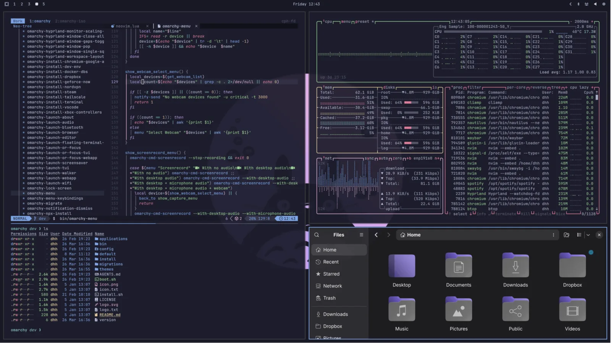

Beautiful
A new theme is a new machine. One hundred and forty-six of them from the community, on top of the ones that ship in the box.
The malleable OS for the age of agents. Where you can vibe your way through every alteration, tweak, and desire. Be the Omarch and command your agent!

catppuccin
A new theme is a new machine. One hundred and forty-six of them from the community, on top of the ones that ship in the box.
People put this on a mini PC, a folding laptop stack, a desk full of split keyboards. Then they send pictures.
Tiling. Keyboard first. Ready out of the box. Yours to break after that. Super + Space is the menu; Super + K is every hotkey.